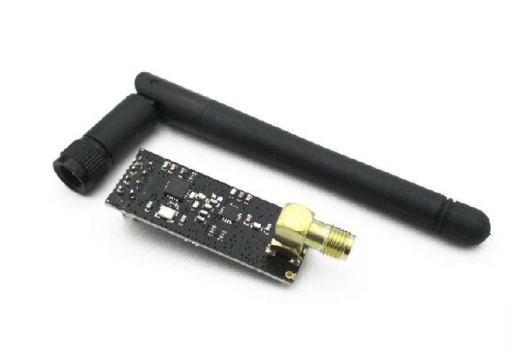

Crazepony器件總覽及選型說明
電機
716有刷空心杯電機（4.1版本）。
720有刷空心杯電機（5.0版本及以後），中心軸直徑1mm。淘寶購買地址：地址1。
槳葉
直徑為45mm槳（4.1版本）。
直徑為75cm槳葉，槳葉中心孔直徑為1mm，正好配上面的720電機。淘寶購買地址：地址1。
電池
飛機電池為350mAh，3.7V，25C航模電池。購買地址（建議自己上淘寶上尋找，這個鏈接是阿里巴巴鏈接，需要批量拿貨）。
購買時需要注意電池接口。
2.4G模塊
遙控器上使用市面上的2.4G模塊，根據遙控距離的不同，有下面兩種可以選擇。
加PA的鞭狀天線，最大發送功率20dBm，可以遙控距離100米。購買地址。

不加PA的發射模塊，最大發射功率0dBm，可以遙控距離10米。購買地址。

主控MCU（單片機）
STM32f103T8U6，內核為ARM Cotex-M3，72MHz主頻，AD/硬件I2C/硬件PWM。
電機驅動
SI2302，N溝道增強型MOS，導通電阻82mΩ，2.2v低GS電壓。
陀螺儀加速度計
MPU6050，三軸陀螺儀+三軸加速度計，自帶DMP四元數輸出，內部溫度補償。
氣壓計
MS5611，10cm精度氣壓計。
電子羅盤（磁力計）
HMC5883L，電子羅盤。
2.4G無線射頻芯片
nRF24L01，2.4G無線射頻收發芯片。
藍牙透傳模塊
HM-06
淘寶購買地址，僅此一家。
USB轉串口芯片
cp2102，USB轉串口芯片，用於固件下載，參數調試。
鋰電池充電管理
LT4054，鋰電充電管理芯片。
搖桿電位器
淘寶購買地址。
我們對油門搖桿的要求是推左右自動回中，推上下不回，可停留在另意位置。根據這個要求，我們只找到了這種拆機的搖桿物料。
5.1版本即以後，油門搖桿使用自動回中的電位器，不再使用上面的拆機搖桿，所有搖桿都是新物料。
陶瓷天線
飛機上2.4G使用了陶瓷天線，型號為：rainsun An9520-245。